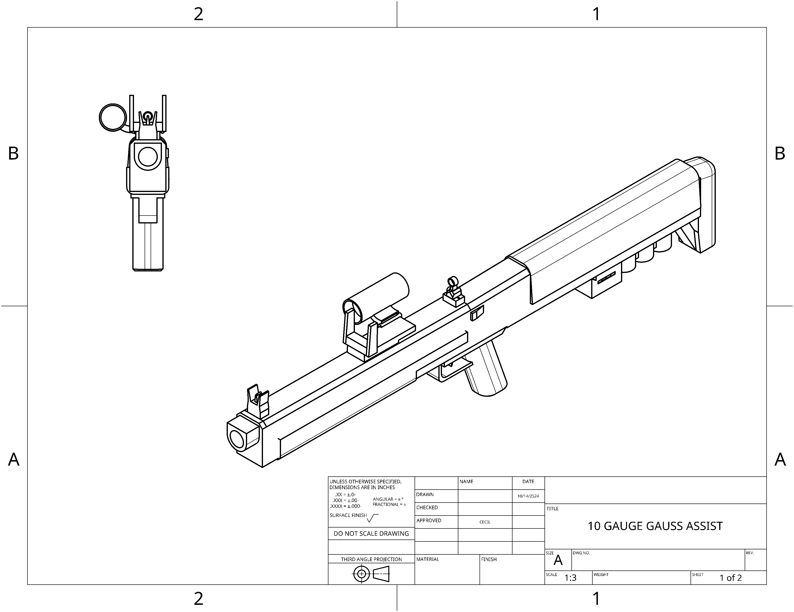
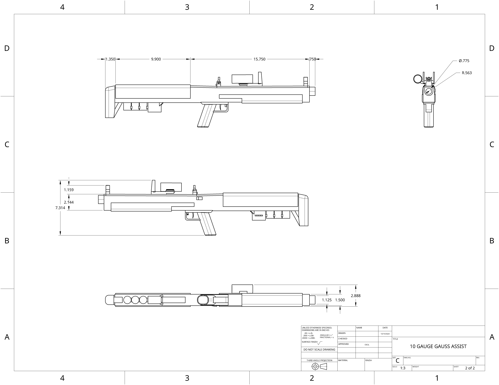

bullpup 10 gauge gauss assisted shotgun with a minimalist design approach, utilizing variable choke. Possesses the longest effective range of all shotguns fielded by both the UCSC and ECC.
 | | | | | | |
|---|---|---|
| Damage: | 15 x 8 =(120) | (Headshot capable) |
| Velocity: | 1200-1800mps | |
| Armor penetration: | 30- 55mm | |
| Rate of fire: | 60rpm | |
| Magazine size: | 4 |